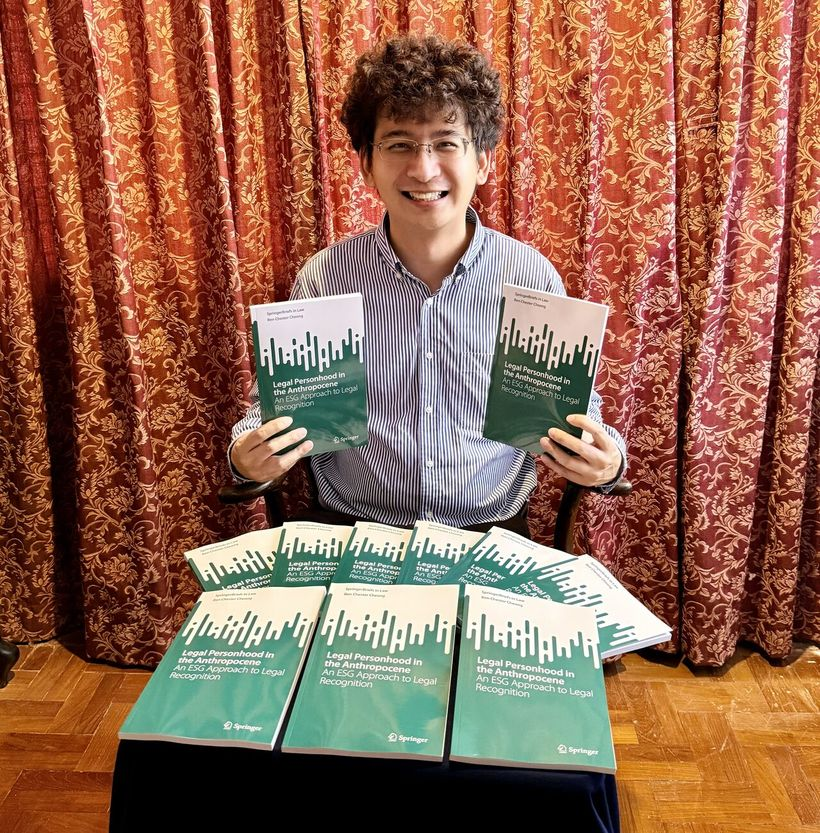

Climate & intergenerational justice
How courts, statutes and markets can protect future generations. Recent work covers the ICJ's climate advisory opinion, the Finch ruling, carbon credits and what legal positivism owes to people not yet born.
Legal academic & lawyer · Singapore and Cambridge
PhD (Cambridge) · LLM (Cambridge) · LLB (First Class Hons) (Exeter)
Advising boards and public institutions on climate liability, corporate governance and the regulation of AI.
I write about how law can answer to people who are not yet born: in climate and planning law, in the duties of companies and their directors, and in the rules we set for artificial intelligence.
Core sample · 2019–2025
Work cited by
Singapore Government (Ministry of Home Affairs) · INTERPOL · World Intellectual Property Organization · EU Agency for Safety and Health at Work
Featured in
Reuters · Al Jazeera · Nikkei Asia · Voice of America · The Straits Times · The Business Times · CNA · Lianhe Zaobao
Recognition
Shortlisted, Transnational Environmental Law Best Article Prize 2025 · SUSS Outstanding Teaching Award 2022 · Accredited Director, Singapore Institute of Directors
My work spans private and public law, legal theory and technology law. It has been cited by the Singapore Government, INTERPOL and WIPO. Four lines of enquiry run through it.

New book · SpringerBriefs in Law · 2026 Legal Personhood in the Anthropocene An ESG Approach to Legal Recognition View on SpringerMost cited
Citation counts from Google Scholar, 31 October 2026.
How courts, statutes and markets can protect future generations. Recent work covers the ICJ's climate advisory opinion, the Finch ruling, carbon credits and what legal positivism owes to people not yet born.
Directors' duties, limited liability, reflective loss and ESG litigation, with a focus on making company law account for long-term and environmental harm.
Transparency and accountability in algorithmic decisions, legal personhood for AI, remedies for data breaches, blockchain and the metaverse.
The principle of legality, Singapore's legal system and public institutions, commentary on public policy and geopolitics, and how to teach law well to adult learners.
Published in
Law Quarterly Review, Journal of Corporate Law Studies, Journal of Environmental Law, Transnational Environmental Law, Journal of Business Law, Statute Law Review, Capital Markets Law Journal, International Company and Commercial Law Review, The Company Lawyer, Journal of Planning & Environment Law, Singapore Academy of Law Journal, Asian Journal of Legal Education
0 publications and 0 media interviews from 2019–2025, cited in OSCOLA form. Filter by theme or type, search titles, or copy a citation straight into your footnotes.
Trained as a corporate finance lawyer before moving into teaching and research. Dual-qualified in Singapore and in England & Wales.
From 2018 to 2023 I convened Law of Business Organisations at SUSS, the compulsory module on partnership, company law and corporate insolvency.
The Straits Times The Business Times CNA TODAY Nikkei Asia Al Jazeera Reuters Voice of America Lianhe Zaobao MoneyFM 89.3 The Star The Edge Singapore The Standard (Hong Kong) Berita Harian Chinese Social Sciences Today
Board, advisory and speaking enquiries are welcome.
Selected engagements
For board and advisory roles, speaking, media comment or research collaboration, email me.
founder [at] benchestercheong.com Scan to save my contactOpens my digital card on your phone, with one tap to add me to your contacts.Visitors
–Where visitors come from